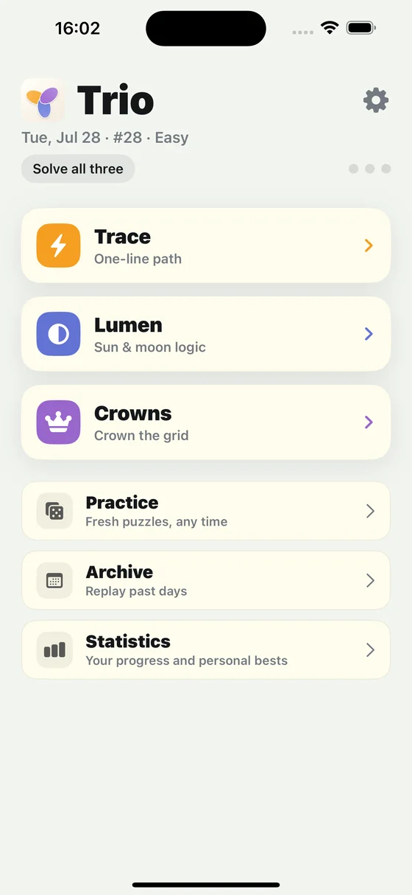
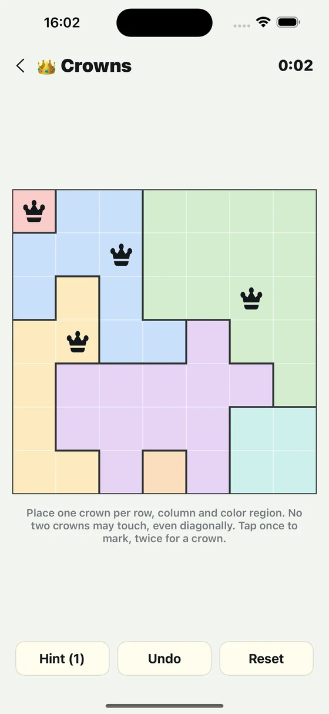

Trace
Draw one continuous path through the numbers in order and cover every cell.
iPhone · iOS 17 or later
Draw a path, balance suns and moons, and place crowns. Everyone gets the same three puzzles each day, and each has a unique solution.
Daily puzzles are free. Core play works offline.

Each puzzle has its own rule set. The daily set gets more challenging as the week goes on.
Draw one continuous path through the numbers in order and cover every cell.
Balance suns and moons in each line. Avoid three in a row and follow the equals and crosses clues.
Place one crown per row, column and color region. Crowns may not touch, even diagonally.
Try spotting a restricted color region before placing a crown. A placement rules out the rest of its row and column as well as every neighboring square.

Core play works offline and requires no account. Private iCloud progress sync is optional.
The one-time purchase opens the past puzzle archive, unlimited practice and hints, and more detailed statistics.
Yes. Every daily puzzle is verified to have exactly one solution.